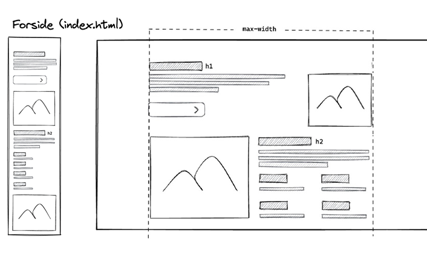
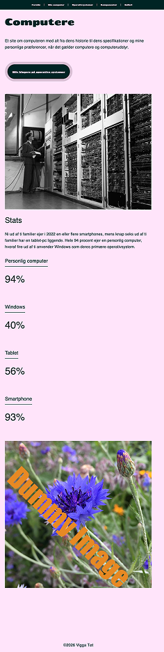
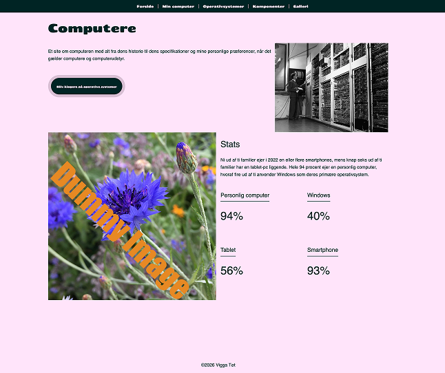
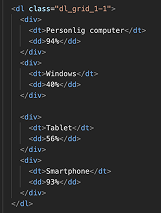
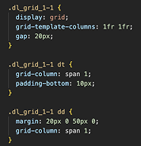
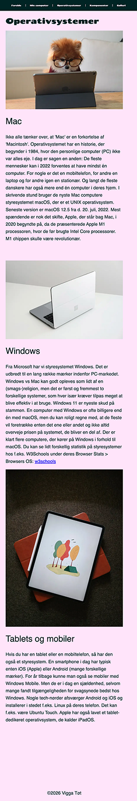
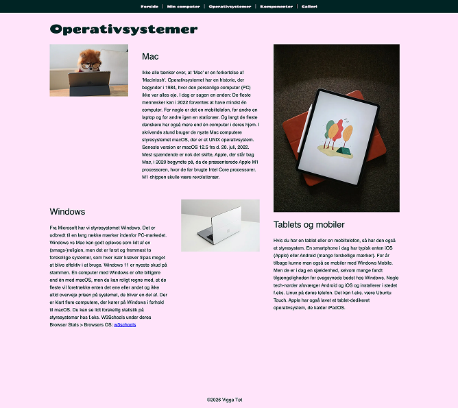
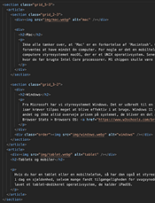
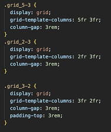

TEMA 2
GRUNDLÆGGENDE WEB
I dette tema fik vi en introduktion til de grundlæggende principper inden for webudvikling og digitalt design. Vi arbejdede med centrale begreber inden for digitale brugergrænseflader, digital kommunikation, indholdsproduktion og responsivt webdesign med fokus på en mobile first-tilgang.
Vi lærte at opbygge websites ved hjælp af HTML og CSS og fik vores første praktiske erfaring med strukturering af webindhold.
Derudover arbejdede vi med grundlæggende billedbehandling, grafik og opsætning af tekst og visuelle elementer i Figma. Som en del af designforståelsen blev vi også introduceret til gestaltlovene og gængse designkonventioner.
1. opgave: mobilsite
I denne opgave udviklede vi den første version af et website med fokus på struktur og opbygning. Vi skulle kode en grundlæggende hjemmeside med flere undersider og en navigationsmenu.
STil opgaven fik vi udleveret wireframes, layoutdiagrammer samt alt nødvendigt indhold i form af tekst og billeder. Derfor var fokus primært på at omsætte designet til kode og følge de udleverede retningslinjer så præcist som muligt.
Projektet gav en grundlæggende forståelse for HTML og CSS, mappestruktur samt samspillet mellem layoutdiagrammer, wireframes og den færdige webside. Samtidig fik vi erfaring med at opbygge responsive layouts og arbejde systematisk med webudvikling fra design til kode.

2. opgave: Desktop
Som en videreudvikling af mobilsite-opgaven skulle vi tilpasse websitet, så det fungerede på både mobil og desktop. Opgaven tog udgangspunkt i det eksisterende site, som nu skulle gøres responsivt og tilpasses større skærmstørrelser.
Ligesom i den første opgave arbejdede vi ud fra udleverede wireframes og layoutdiagrammer, som dannede grundlag for struktur og design. Fokus var derfor på at implementere layoutet korrekt i kode og sikre, at websitet fungerede på tværs af forskellige enheder.
Projektet introducerede os til arbejdet med responsive layouts og media queries samt betydningen af at organisere CSS-filer på en overskuelig måde. Derudover arbejdede vi med typografi og farvevalg for at skabe en tydelig visuel identitet.
Krav til opgave:
Anvendelse af mindst to forskellige skrifttyper.
Brug af et gennemgående farvevalg i designet.
Opdeling af CSS i to separate filer (generel.css og layout.css).
Validering af HTML-koden uden fejl.




Her ses HTML- og CSS-koden for opsætningen af stats-sektionen. Jeg har placeret alle statistikkerne i en dl med klassen .dl_grid_1-1, som er sat op som et CSS Grid med to lige brede kolonner (1fr 1fr). Hver statistik er samlet i en div, som indeholder både et dt (betegnelse) og et dd (værdi).
Da dt og dd ligger i samme div, bliver de holdt samlet og placeret i den samme grid-celle. Resultatet er, at statistikkerne vises i et overskueligt layout med to kolonner, hvor hver betegnelse står over sin tilhørende værdi.
Derudover er der anvendt gap til at skabe afstand mellem elementerne, mens padding og margin bruges til at justere afstanden mellem overskrifter og værdier.




Jeg opbyggede sektionen med et overordnet grid på 5fr 3fr og anvendte derefter undergrids på 2fr 3fr og 3fr 2fr. Dette gjorde jeg for at følge layoutdiagrammet og skabe en varieret, men struktureret opbygning af indholdet.